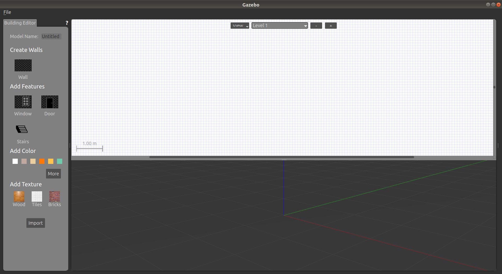
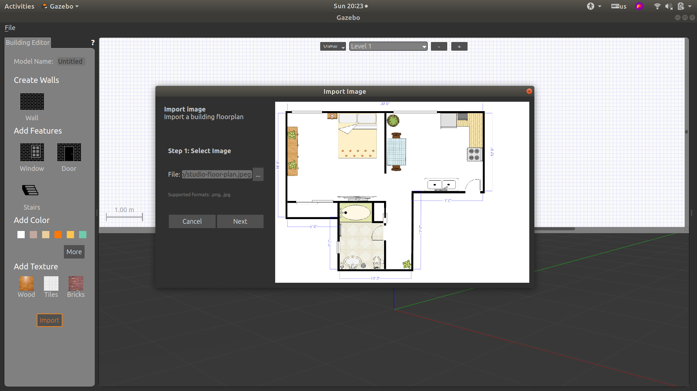
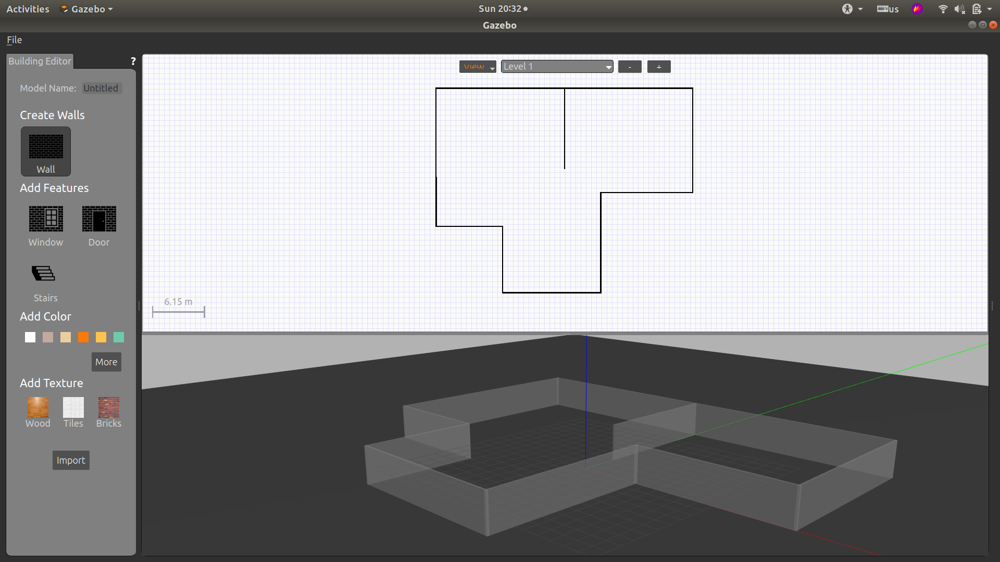
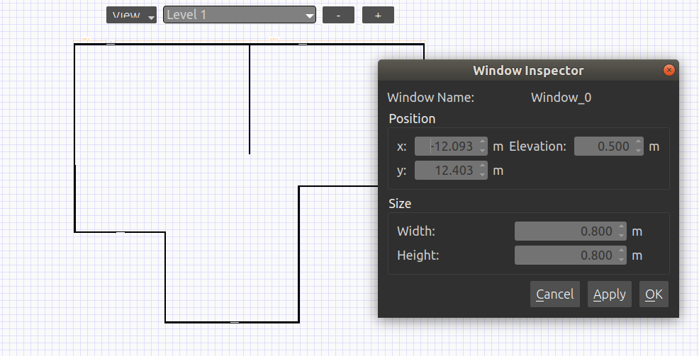
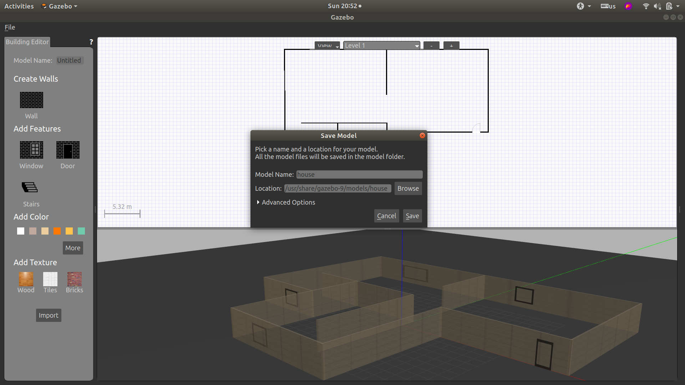
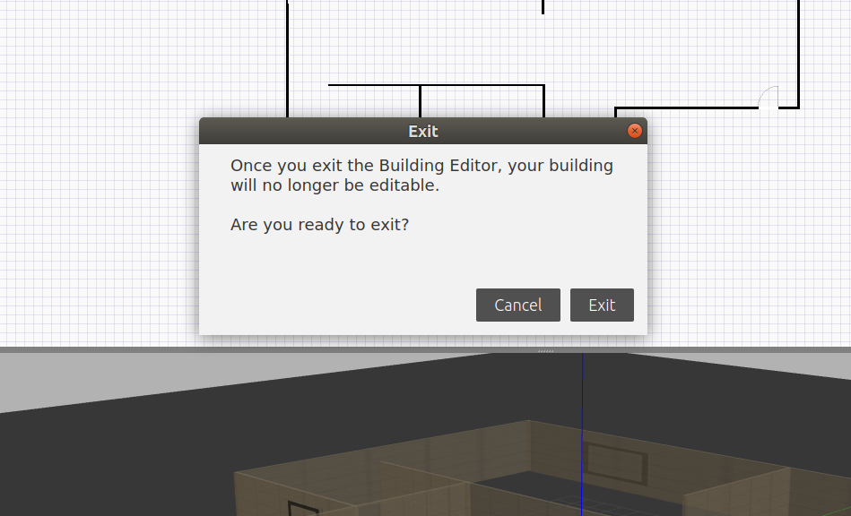

Gazebo仿真场景搭建+配置
一月 31, 2021
搭建场景
打开Gazebo
1 | gazebo |
打开建筑编辑器
点击“Edit”->“Building Editor”或者使用快捷键“ctrl+B”

图形界面
- 左栏可以选择建筑材料和特征
- 上方的界面是二维视图，导入的floor plan可以在这里看到
- 下方的界面是三维视图，能够预览建筑
导入floor plan
导入一个建筑模板
1.点击左栏的“import”
2.选择电脑中的一张floor plan图片

3.设置尺度

在图片中标记一段直线，并在左边输入其实际长度
4.图片出现在二维界面中
添加墙、窗户和门

添加窗户和门的时候有个bug，只能添加横向的窗和门，若添加纵向的gazebo就会闪退，关闭硬件加速或是升级gazebo都没解决。
编辑建筑
双击墙、窗户和门，或者右键选择，即出现参数框

可以调整位置、大小，还可以设置墙的颜色和纹理
保存建筑
保存会创建一个建筑的目录，SDF和配置文件。
点击“File”->“Save”（ctrl+s）。注意：保存的位置要在gazebo/models下

保存后就可以退出，一旦退出这个建筑就不能再编辑，只能往里面插入模型。

配置
在/usr/share/gazebo-9/worlds目录下创建house.world文件，添加以下代码
1 |
|
在/opt/ros/melodic/share/gazebo_ros/launch目录下创建house.launch文件，添加以下代码
1 |
|
运行
在命令行中输入
1 | roslaunch gazebo_ros house.launch |
查看评论